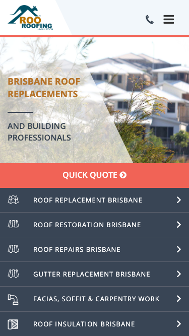

60/100 · strong_redesign · 行业：roofer · 地区：Brisbane · Google 评价：4.6★ （0 条）
投入分级： C 批量轻触 — 模板邮件 + 报告
PDF 链接，无主动跟进
触发依据： - C · strong_redesign · audit 60 · 0 评论 4.6★ (未达 B 标准)
下一步行动： 标准模板邮件 + master.md PDF 链接，无主动跟进。等客户回复触发后再投入。
线索来源 · 联系开场可用: - 来源:
Google Maps (gosom 抓取) - 搜索关键词:
roofer in brisbane - 首次发现:
2026-05-14
审计结论： audit_score=60 → strong_redesign · weakest: gbp 20, technical 40 · fired: no_https · 1 critical issues
已触发的 hard triggers： no_https
independent_http_site

慢速 4G 加载实景视频（1.6 Mbps · 150ms 延迟 · 4× CPU 节流，模拟真实手机访客的体验）：
The site shows the service and phone number clearly, but the dated visual style and weak trust proof make it feel less current than a Brisbane roofing customer would expect.
新鲜度 4/10 · 信任度 5/10 ·
转化准备度 6/10 · 设计年代 outdated
值得保留的优点： - The business name and phone number are prominent on desktop. - The coral quote button stands out clearly against the muted page colors. - The mobile service rows make the main roofing services easy to scan.
技术事实
http only
普通话翻译
你的网站没有 HTTPS — 浏览器会在地址栏显示「不安全」标记，部分浏览器（Chrome / Firefox）甚至会弹出全屏警告挡住页面。
对客户的影响
Google 早在 2018 年起把 HTTPS 列为搜索排名因素，没有 HTTPS 直接拉低自然搜索可见度；且超过 80% 的访客看到「不安全」标识会立刻关掉。对你这种 0 条 Google 评价积累起来的口碑来说，访客在网址栏就被劝退，等于浪费了所有 GBP 流量。
技术事实
On mobile, the top bar shows only a phone icon and hamburger icon; the actual number “1300 734 148” is not visible.
普通话翻译
手机顶部只有电话图标，没有直接显示电话号码。
对客户的影响
本地搜索很多发生在手机上。客户想马上打电话时，如果看不到号码，可能会返回 Google 选择另一个更容易联系的屋顶公司。
正确长啥样
Mobile header should show a tappable phone button with either the full number or a clear “Call 1300 734 148” label visible without scrolling.
Redesign 怎么改
Replace the standalone phone icon with a visible click-to-call control reading “Call 1300 734 148” or add a sticky bottom call bar.
技术事实
0 reviews
普通话翻译
你的 Google 评价数量低于同行平均水平。
对客户的影响
本地搜索排名信号之一就是评价数量；不光是分数，连”有多少条”都算。短期可以做的：每个完工的客户群发一条「点评一下吧」的 SMS。
技术事实
title=‘# BRISBANE ROOF REPLACEMENTS’ contains-name=true contains-niche=false
普通话翻译
你网站的浏览器标签 title 没把业务名字 + 服务关键词写清楚（比如该写「Roo Roofing - roofer Brisbane」，但目前是泛泛一句）。
对客户的影响
Google 搜索结果里展示的就是这个 title。写不清楚 = 排名靠后 + 即使排上来客户也不知道是不是匹配的服务。SEO 最便宜的修复，但很多本地企业完全没做。
技术事实
no LocalBusiness JSON-LD
普通话翻译
网站没有 LocalBusiness JSON-LD 结构化数据（让 Google / AI 知道你是本地企业、地址、电话、营业时间的标准格式）。
对客户的影响
Google「附近的服务」「Knowledge Panel」「AI Overview」都依赖这类结构化数据。没有 = 即使排名上去也不会出现在右侧 Knowledge Panel 或地图卡片里 — 错失高转化的展示位。AI agent / ChatGPT 引用本地商家时也是基于这些数据。
技术事实
The desktop hero uses a pale washed-out roof photo with a large angled translucent white overlay cutting through the middle of the image.
普通话翻译
首页大图看起来有点旧，透明斜块和发白的照片让网站不像最近更新过。
对客户的影响
客户通常会在几秒内判断这家公司靠不靠谱。如果第一眼显旧，从 Google 商家资料点进来的客户可能会直接回去看下一家。
正确长啥样
A sharp real roofing project photo with a simple dark or light overlay, clear headline, visible service area, and one strong phone or quote button above the fold.
Redesign 怎么改
Replace the faded angled hero treatment with a high-resolution Brisbane roof project image, flat overlay for text contrast, and a single primary CTA block.
技术事实
The first desktop screen shows the logo, phone number, menu, hero headline, and buttons, but no review rating, licence detail, years in business, or completed-job proof.
普通话翻译
首屏没有马上告诉客户“我们值得信任”，比如评价、资质、保险或本地案例。
对客户的影响
屋顶工程金额高，客户会更谨慎。缺少信任信息会让本来准备打电话的人先去比较别家公司，尤其是从 GBP 进来的冷流量。
正确长啥样
Above the fold should include 3-4 compact trust markers such as star rating, insured/licensed wording, Brisbane service area, and number of roofs completed.
Redesign 怎么改
Add a trust strip directly under the header or inside the hero with Google rating, licensed and insured claim, local Brisbane coverage, and a proof metric.
技术事实
The mobile hero stacks “BRISBANE ROOF REPLACEMENTS” and “AND BUILDING PROFESSIONALS” over a busy roof image, with divider lines and a large angled overlay taking much of the space.
普通话翻译
手机首屏文字和图片挤在一起，重点不够直接。
对客户的影响
手机访客通常滑动很快。如果前 8 秒看不懂你做什么、能不能服务 Brisbane，他们很容易离开。
正确长啥样
Mobile should use a single-column hero with a short headline, one supporting line, readable 16px+ text, and a primary call button visible immediately.
Redesign 怎么改
Simplify the mobile hero to “Brisbane Roof Replacement & Repairs” with one support line, stronger contrast, and remove decorative divider lines.
技术事实
Immediately under the mobile “QUICK QUOTE” bar, six dark service rows fill the screen with icons, uppercase labels, and chevrons.
普通话翻译
手机上很快就进入一长串服务菜单，但还没先建立信任。
对客户的影响
客户不是只想看菜单，他们要先确认这家公司靠谱。信任信息太晚出现，会降低从 GBP 进入后的来电意愿。
正确长啥样
Mobile should show the main CTA, then a compact trust row, then 3-4 top services with a “View all services” option.
Redesign 怎么改
Keep only the highest-intent services near the top, add review/licence proof above the list, and move the full service menu lower on the page.
我们前面那段「慢速 4G 加载视频」是我们这边的实验室结果。这一段是 Google 自己对你网站打的分，包括过去 28 天 真实访客的网络体验数据（CRUX field data）。
Lighthouse 分数（实验室）：
| 维度 | 分数 |
|---|---|
| 性能 (Performance) | 41/100 |
| 可访问性 (Accessibility) | 77/100 |
| 最佳实践 (Best Practices) | 73/100 |
| SEO | 77/100 |
Lab 关键指标： LCP 11.6s · FCP
4.1s · CLS 0.022 · TBT 715ms
Google 建议的优化项（按节省时间排序，前 2）：
Lighthouse 分数： Performance 67 · A11y 78 · Best Practices 77 · SEO 85
PSI 给的是宏观分数，下面是具体可改的两块：图片格式与 tracker 脚本。
总评： 基本未优化 — redesign 可显著降低图片下载量
具体问题： - [major] 45 张图几乎全是 JPG/PNG，未用 WebP/AVIF — 估算可节省 30-50% 图片下载量 - [minor] 45/45 张图无响应式 srcset — 移动端浪费带宽 - [minor] 42/45 张图未 lazy load — 首屏外的图阻塞主线程 - [major] 32/45 张图缺 alt 文字 — 影响 SEO + 可访问性 + AI 抓取 - [minor] 37/45 张图无显式 width/height — 加重 CLS 布局抖动
已识别的 tracker：
| 工具 | 类型 | 请求数 | 字节 |
|---|---|---|---|
| Google Tag Manager | analytics | 2 | 308.8 KB |
| Meta Pixel | ad_pixel | 2 | 101.3 KB |
| Hotjar | analytics | 3 | 57.9 KB |
| HubSpot | email_capture | 2 | 0.6 KB |
| DoubleClick | ad_serving | 2 | 0.4 KB |
| Google Analytics | analytics | 1 | 0.0 KB |
观察： 12 个 tracker 合计加载了 469 KB —— 这些都是阻塞主线程的脚本，是性能 + 隐私双角度的销售切入点。redesign 时可以建议清理不再使用的 tracker。
客户最常担心的问题：「我重做网站，会不会丢掉 Google 排名？」这一段直接回答。
https://www.rooroofing.com.au/sitemap_index.xml页面分类：
| 类型 | 数量 |
|---|---|
| 内页 | 72 |
| service_area_page | 59 |
| 服务详情页 | 37 |
| area_page | 18 |
| 顶层页面 | 9 |
| 首页 | 2 |
| 法律 / 隐私 | 1 |
| 联系 / 报价 | 1 |
| 关于 / 团队 | 1 |
Sitemap lastmod 跨度： 最旧 2016-06-20 → 最新 2026-03-17
Redirect 计划承诺： redesign 上线时我们会附一份 50 条 1:1 redirect 表（旧 URL → 新 URL），保证 Google 已经索引的页面权重无损迁移。已经在 Google 第一二页的关键词不会丢。
长尾覆盖： 强 — 已有 5+ 服务×区域页，长尾流量基础在
现有服务页样本：
/understanding-roof-built/ ·
/possum-proof-roof/ · /5-signs-need-re-roof/ ·
/tile-vs-metal-roofs/ ·
/ultimate-guide-australian-roof-types-ebook/
现有服务×区域页样本：
/collection-australias-interesting-roofs/ ·
/need-fire-resistant-gutter-guards/ ·
/5-roofing-materials-warmer-climates/ ·
/roof-restoration-beenleigh/ ·
/roof-restoration-gold-coast/
客户能不能 方便地 把信息留下来 =
直接的转化路径。这一段审视所有 <form> 元素的可用性 +
防 spam 配置。
未检测到任何 anti-spam 措施（reCAPTCHA / hCaptcha / Turnstile / honeypot 都没有）— 表单极容易被自动机器人灌爆，垃圾询盘会让客户对真实询盘麻木。redesign 时建议加 Cloudflare Turnstile（不可见，免费）。
Audit 总结：
none）partial (只有 2/3 —
建议补全)这是后续 「Social Media Management 月度包」 或 「Cold Outreach 启动包」 的前置条件 —— 邮件 DNS 没修好，发出去的邮件全进垃圾箱。redesign 时一并处理。
从网站源码识别出来的工具，能帮我们判断这位客户的数字成熟度。
数字成熟度打分： 5 / 6 （高 — 客户懂数字营销，redesign 谈预算时不必从零教育）
客户可能有数月 / 数年的历史数据 + 广告投放受众 sit 在这些 ID 上面。重做时必须用同一套 ID 重新接进新网站，否则等于清零所有累积。
我们 redesign 交付清单会把这些列为「必须 setup 项」。
本地服务的客户在掏钱之前会查这些凭证。缺失 = 客户跳到下一家。
信任分： 25/100
GEO = Generative Engine Optimization。ChatGPT、Perplexity、Google AI Overviews 这些 AI 搜索产品不像传统搜索引擎那样按”关键词排名”工作，它们直接抓取结构化数据并把答案合成给用户。如果你的网站在 AI 抓取这一块做得不到位，等于在生成式搜索时代隐身。
AI 可发现性总分： 40 / 100 — AI agent 抓取部分支持，但关键 schema / 凭证 / FAQ 缺失
localbusiness_schema — Organization JSON-LD
present (LocalBusiness preferred for local services)semantic_landmarks — 4 semantic landmarks
present: <nav, <header, <footer, <sectioneeat_warranty_trust — warranty/guarantee
mentionedjsonld_at_least_one — 3 JSON-LD block(s)
detected on pagellms_txt_present (5 分) — no /llms.txt at
standard pathai_bot_robots_policy (5 分) — robots.txt has no
explicit policy for AI crawlers (GPTBot/ClaudeBot/etc)service_schema (10 分) — no Service JSON-LDfaqpage_schema (10 分) — no FAQPage JSON-LD
(loses AI Overview / featured snippet eligibility)aggregaterating_schema (5 分) — no
AggregateRating JSON-LD (★ rating not shown in search snippets)breadcrumb_schema (5 分) — no BreadcrumbList
JSON-LDfaq_qa_pattern (10 分) — 2 question-style
heading(s) found (Q&A format helps AI extraction)eeat_business_credentials (10 分) — only 1/4
credentials found (license/QBCC) — need ≥2 of: ABN, license/QBCC,
years-in-business, insurance销售切入： 「ChatGPT 现在每月 30 亿次搜索，本地服务用户问『Brisbane 哪家屋顶公司靠谱』，AI 回答时只引用结构化数据完整的网站。你目前在这个新阵地的得分是 40/100。」
注：这一段只给运营内部看，不进入客户报告。 用来判断这个 lead 是不是匹配我们「小网站 / 多批量 / 快上线」的产品定位。
mid —
中型客户，可接但价格要往上提（基础包 + 配置项）报价以上方 建议报价 为准（来自 entity.grade.recommended_pricing / PRODUCT_TIER_TABLE）。本段只用来判断 lead 是否匹配产品定位，不竞争报价。
触发依据： - 网站页面数 200（≥100，中等复杂度） - 已部署 4 个分析 / pixel 工具（高数字成熟度）
redesign 是一次性收入。以下是基于这个客户当前现状自动识别的持续性服务包机会，可以在 redesign 提案签字时一并捆绑进去。
触发依据： 网站没有 blog 板块 — 没有内容营销基础设施，长尾 SEO 流量为零。
包内容： 每月 2 篇 SEO-optimized blog（800-1,200 字）+ 每季度 1 篇 case study（含 before/after 图）+ 关键词研究报告。
月度费用区间： $400-800/月
销售切入： 「ChatGPT 时代搜索引擎更偏爱有「专家深度内容」的网站。你目前的网站只有服务介绍页 — AI 可引用的素材几乎为零。」
-2026-05-11-v1codex_cliGoogle Places · most_relevant (max 5)